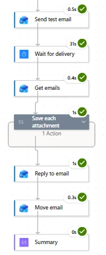

- Power Automate
- Level 7 · Files, email and documents · 2 of 7
Reply, move and read email
After a flow processes an email it usually does three more things: replies to the sender, moves the email out of the Inbox so it isn't processed twice, and reads the body text to find details. Each has one catch worth knowing.
Reply and move

| Action | Key inputs |
|---|---|
| Reply to email (V3) | Message Id from the trigger or Get emails, the reply text, and Reply All yes or no |
| Move email (V2) | Message Id and the destination folder (Archive in the demo) |
A real failure from the demo. The first run failed at Reply to email with A message needs to have at least one recipient. The test email was sent by the same account that replied, and Outlook leaves you out of your own reply. Setting the reply's To field to the original sender, first(outputs('Get_emails')?['body/value'])?['from'], fixed it. Real senders are usually other people, but shared-mailbox and test setups hit this often.
Reading the body as text
The email body is HTML. To search it for an order number or a name, you need plain text.

| Option | Gives you | Watch out for |
|---|---|---|
bodyPreview from Get emails or the trigger | Plain text, no connector needed | Only the first part of the message (about 255 characters) |
| Html to text (Content Conversion connector) | The full body as plain text | A separate connector that your data policy must allow |
| Text functions on the HTML | Values between known markers with split() and substring() | Breaks when the email layout changes |
In the environment used for these demos, the data policy blocks Content Conversion (Admin data policy 'Advanced Connector Policy' restricts use of these apis: shared_conversionservice), so the demo uses bodyPreview. Check your own policy before you design around Html to text.
New to this? Start from the basics optional
Message Id: the unique ID of one email. Reply, move, flag and mark-as-read actions all need it.
Well-known folders: Inbox, Archive, Sent Items, Deleted Items. Other folders are chosen from the folder list in the action.
Build it step by step optional
- After the trigger or Get emails, add Reply to email (V3) with the Message Id and your reply text.
- Under Show all, set To to the original sender when the mailbox may reply to itself.
- Add Move email (V2) with the same Message Id and a folder such as Processed.
- For the body, use
bodyPreviewfor short checks, or Html to text if your policy allows it.
Common mistakes
- Leaving processed mail in the Inbox, so a polling flow picks it up again.
- Replying with Reply All to a large distribution list.
- Searching the HTML body for text that is split by tags, such as
REQ-<b>1042</b>.